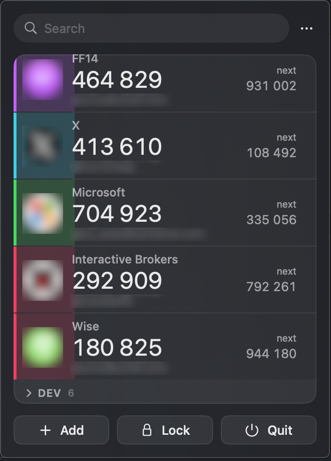
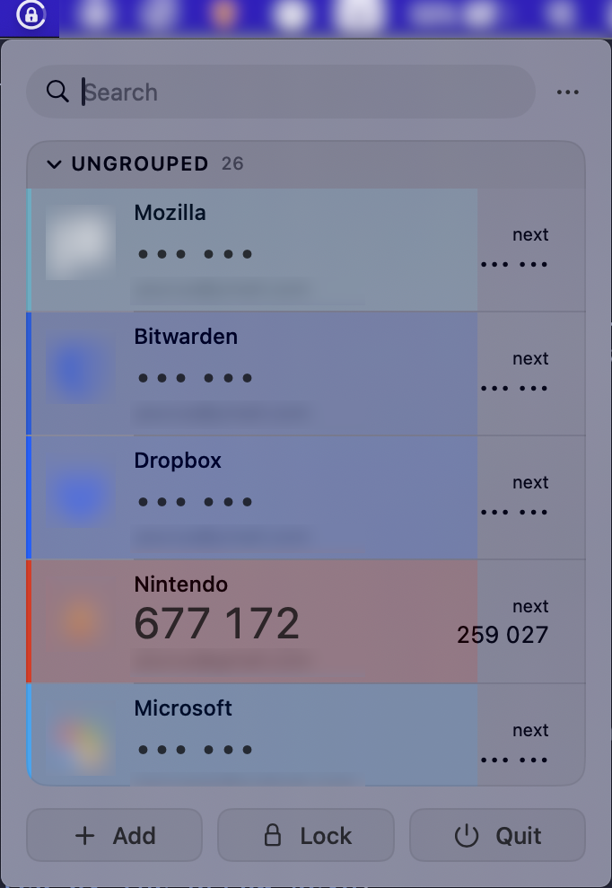
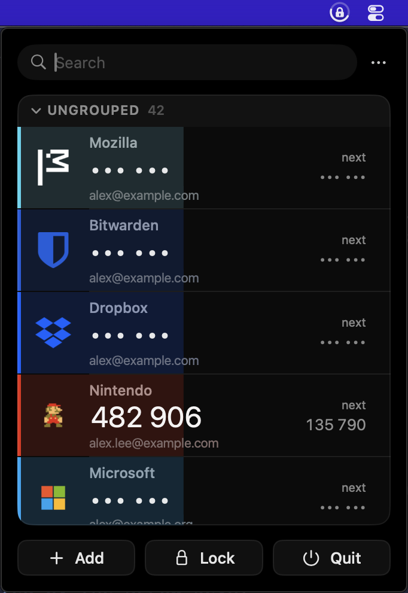
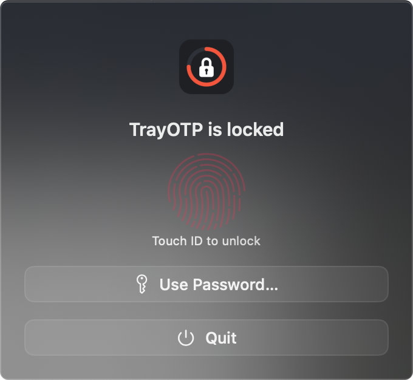

Your two-factor codes, one click away.
TrayOTP lives in the macOS menu bar. Click the icon, click a code, it's copied. Encrypted, offline, and no account to create.
What's new: release notes · full changelog
- macOS 14 or later
- Apple silicon and Intel
- MIT licensed
- TOTP, HOTP and Steam Guard

Everything a menu bar authenticator should do.
Small, native and quick, with the details that make a daily tool pleasant.
Lives in the menu bar
No Dock icon and no window to manage. Click the tray icon, click a code, and it's on your clipboard.
Next code preview
The upcoming code sits beside each row, and a fill behind the row shows how long the current one has left.
Keyboard or mouse
A global shortcut to open, type to search, ↩ to copy, ⌘↑ ⌘↓ to reorder, Esc to close.
Move in or out freely
Import from Google Authenticator, 2FAS, Aegis, Ente Auth, Bitwarden, Proton Authenticator, Stratum, andOTP, FreeOTP+, Raivo and password manager CSVs. Export to the main ones.
Locked by default
Touch ID or your Mac password before any code shows. Add an optional master password for exports and deletes.
Hide codes until you need them
Mask codes until you hover or click, hide chosen tokens always, and keep the panel out of screen sharing.
Encrypted backups, with a nudge
One click saves an encrypted backup to a folder you choose, and TrayOTP reminds you when it's getting old.
Tidy clipboard
Copied codes are hidden from clipboard managers and cleared after 30 seconds, if you haven't copied something else.
Light, dark or Deep Black
Follows your Mac by default. Pick a theme yourself, or go pure black for OLED screens.
At home on any Mac.
The same panel in every theme. Service icons come from icon packs you install yourself, or pick your own.


Private and encrypted, and honest about its limits.
Your secrets stay on your Mac.
There is no account, no sync and no analytics.
- AES-256-GCM encryption, in a file only your user account can read.
- The key is a random 256-bit key in your login keychain, never next to the file.
- Decrypted only after Touch ID or your Mac password, and dropped from memory when it locks.
- Exporting and deleting tokens ask for your password again, even while unlocked.
- Nothing leaves your Mac, except a domain you choose to look up for a site's icon.

Install in a minute.
Download the app from GitHub, or build it yourself.
- DownloadGet
TrayOTP-vX.Y.Z.zipfrom the latest release, where the release notes are too. - Move it to ApplicationsUnzip it and drag TrayOTP.app into your Applications folder.
- Open itThe first time, macOS says it can't verify the app. That's expected: see below.
Why does macOS warn me?
TrayOTP is open source and isn't signed with a paid Apple Developer certificate, so macOS can't check who made it. Follow Apple's guide to opening an app from an unknown developer. You only need to do this once per version.
Rather not trust a download?
Build it yourself with Apple's Command Line Tools. Apps you build yourself open without a warning. Each release also has a .sha256 file to check the download.
git clone https://github.com/outerstudio/trayotp.git
cd trayotp
make release # builds build/TrayOTP.app
cp -R build/TrayOTP.app /Applications/TrayOTP is free and open source.
If it saves you time, you can help keep it going.
There's no paid tier and nothing in the app nags you for it.
Can't chip in? Star the project on GitHub, tell a friend, or report a bug. That helps too.